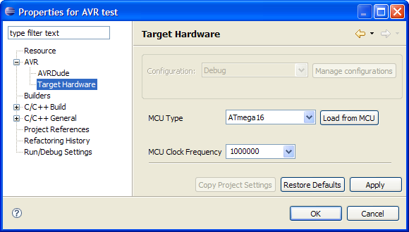
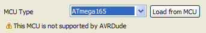

For each project or optionally each build configuration the toolchain maintains two options for the target processor hardware - the processor type and its clock speed. The processor type is passed as a command line option to all tools requiring the processor type. The clock speed is only passed onto the compiler as a #define F_CPU xxxxxxxxUL. Its up to the application to do anything with this value, e.g. adjust its internal timings.
The options can be changed via the project properties.
To change the target processor select the project properties and expand AVR Target Hardware.

If an avrdude programmer has been set for the project (or build configuration), the Load from MCU button will start avrdude and query the programmer for the MCU currently attached to the programmer.
The list of MCUs is generated dynamically and is based on the currently installed avr-gcc compiler. If you do not find the required MCU in the list you can try to update the avr-gcc toolchain.
Not all MCUs supported by avr-gcc are also supported by avrdude. The plugin will show a warning if the selected MCU is not supported by the currently active avrdude executable.

In this case you can still use Eclipse to write the application, but you cannot use Eclipse to upload the project to the target MCU. Some tool other than avrdude will be needed to do the upload, e.g. AVR Studio. The AVR Supported MCUs view can be used to check what MCUs are supported by avrdude and AVR Studio.
Add / Remove AVR specific Tools from the Toolchain